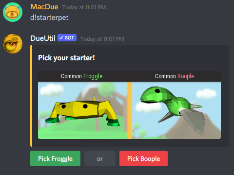
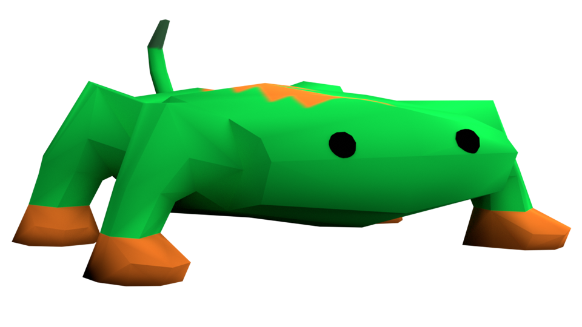
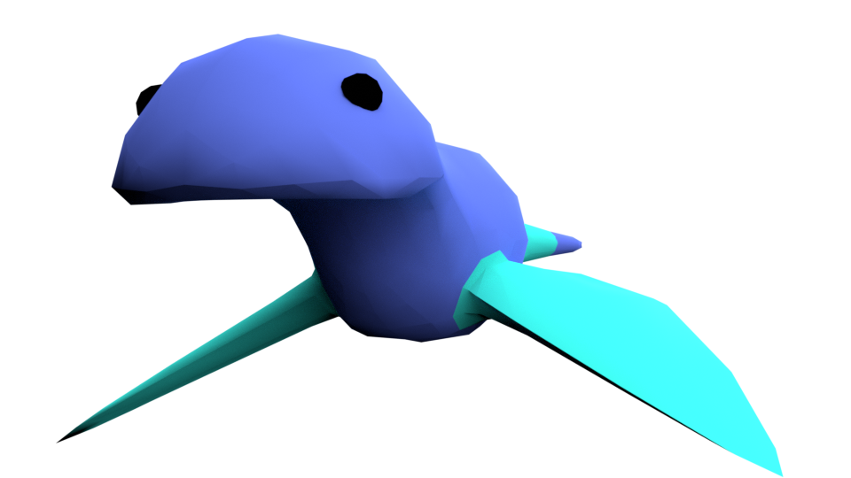
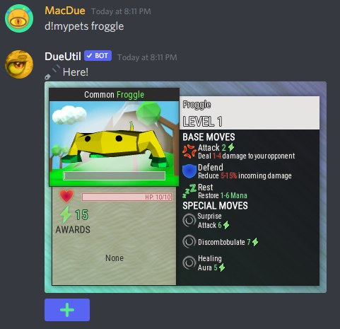
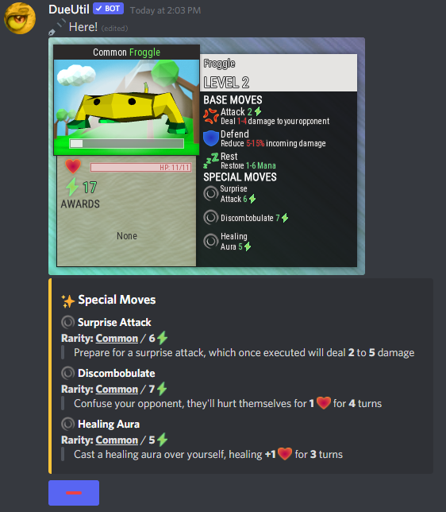
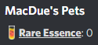
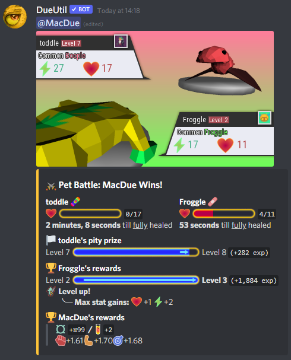
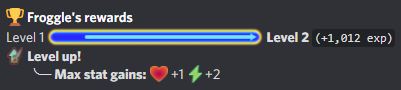
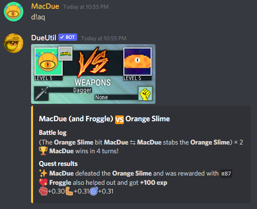

Table of Contents
How to get a pet?
You can get your first pet using d!starterpet 
As you can see, you have a choice between two different pets.
These two pets wont change if you reuse the command.
You can view a list of all your pets by using d!mypets
Species
There's 2 types of species of pet you can collect:
Froggles
Booples
Each species of pet has its own set of skins.
Currently, there are no stat differences between pets.
Viewing your pet
To view your pet's info, you use d!mypets [pet name] 
To see extra info about your pet, you can click the button below the image. 
Rarity
You will notice on your pet's info card, it has a rarity
There are 5 types of rarity a pet can spawn with:
- Common (chance: 50%)
- Uncommon (chance: 25%)
- Rare (chance: 20%)
- Very Rare (chance: 4%)
- Legendary (chance: 1%)
There is a 6th rarity - Exotic - but it cannot be obtained normally.
A pet's rarity effects:
- The skin of the pet
- What elements it can spawn with (currently pets can get all elements)
- A pet's starting stats at level 1
- Stat increases when levelling up (higher stat increase with higher rarity)
- Base moves (higher rarity, higher stats)
- Special moves (moves will drop closer to your pet's rarity)
Rare Essence
On your d!mypets page, you can see an item called Rare Essence.

Rare Essence is used to upgrade your pets rarity, by using d!rarifypet
Pet Battles
A new way to battle on DueUtil!
A d!petbt is a turn-based interactive fight between two pets (PvP).
Both pets battle to reduce the others’ HP to 0 using a varity of moves
Pet battles reward both the winner and the loser.
Fighting against stronger pets than your own, will give you greater rewards.
HP & Mana
Pets have two stats that are used in a d!petbt
HP
HP is your pet's health.
During a d!petbt, the aim it to get your opponents HP to 0.
When a battle is finished, your HP takes a few minutes to heal.
The heal rate is 8HP per minute.
Mana
Mana is your pet's energy.
It is spent when you use a move or lost as a result of your/opponents moves
Unlike HP, Mana resets after each battle.
Both stats increase by a random amount when your pet levels up.
You will get more Mana than HP.

Elements
Pets with a rarity of Uncommon or higher will spawn with an element
There are currently 4 types of elements:
Photic
Flaming
Sub-Zero
Stoic
Each element has its own set of Special Moves
Currently, all elements has an equal chance of spawning.
Base Moves
All pets have these 3 base moves:
Attack
A standard attack move that deals damage to the opponent.
The damage dealt and Mana cost, increase as the pet levels up.
Defend
A defensive move that defends you from % of incoming damage from your opponent.
If your opponent attacks after you have used the move, you will lose 50% of the damage dealt as Mana
The range of protection the defend gives, increases as the pet levels up.
Rest
A regen move that gives your pet a random amount of Mana back.
The range of Mana resting gives, increases as the pet levels up.
Special Moves
Special moves are something pets spawn with, and can aquire/change over time.
Special moves, like pets themselves, spawn with a different rarity
The higher the special move rarity, the stronger the move is; this could include things like: higher damage, longer status effect duration -- all at the cost of a higher Mana cost.
All pets start with 3 special moves:

Suprise Attack
Prepare for a surprise attack, which once executed will deal 2 to 5 damage

Confound
Confuse your opponent, they'll hurt themselves for 1 for 4 turns

Healing Aura
Cast a healing aura over yourself, healing +1 for 3 turns
Special moves can spawn with an element, or they can be  universal (all pets can use them).
universal (all pets can use them).
Special moves drop for pets every 10 levels.
Pet Drops
Pet drops occur 5-10 seconds after a battle.
The winner of a d!petbt has a 10% chance of a pet spawning.
You have to be quick to make your decision.
After 30 seconds the pet will run away!
Level
Pets gain exp for completing a d!petbt, but they also gain some EXP when you do a quest.

Pets cannot level up with the EXP gained from helping you in a quest.
The only way to level up is by completing a d!petbt